GUIDE — はじめての使い方
口腔機能管理くんの使い方──はじめての1人目を、患者登録から管理計画書の印刷まで
口腔機能管理くんをダウンロードしたあと、「最初に何をすればいいか」を、実際の画面で順番に説明します。
例として、口腔機能低下症の患者さんを1人登録し、検査を入力して、管理計画書を印刷するまでをたどります。
このページの画面は、バージョン 1.9.6 の iPad のものです。患者は架空の「見本 花子」さん、数値も説明用の値です。
iPhone でも手順は同じで、画面の並びが少し違うだけです。Android も流れは同じですが、サインインと印刷・保存のメニューが違います（STEP 1・STEP 6 に書きました）。
ほかの検査の種類での違いは「ほかの検査の種類で使うとき」にまとめました。
POINTS — 先に知っておくと迷わないこと
- 検査の種類はホームで先に選びます。患者登録の画面には検査の種類の欄がありません
- 検査の保存は長押し（約1秒）です。印刷も長押し（約2秒）。患者登録と管理計画書の「保存」は普通に押すだけです
- 口腔機能低下症・発達不全症では、管理計画書を保存すると印刷のボタンが出ます
- 患者の登録は無制限。検査の評価は、検査の種類ごとに評価を保存した患者4人まで無料です（同じ患者の再評価は数えません）
- 別の端末では、同じアカウント・同じPINで同じデータが使えます
STEP 1サインインして、PINを決める
最初に1回だけ、サインインとPINの設定をします。
- アプリを開くと、サインインの画面が出ます。
- iPhone・iPad では Apple でサインイン か Google でサインイン を押します。Android では Google でサインインします。
- PIN（4〜8桁の数字）を決める画面になります。数字を入れて 次へ を押します。
- もう一度同じ数字を入れて、設定完了 を押します。
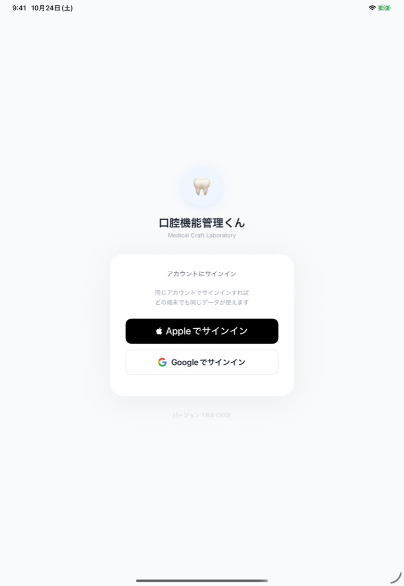
医院で1つのアカウントを決めて、すべての端末で同じアカウントを使ってください。同じアカウントでサインインすれば、どの端末でも同じ患者データが使えます。
Apple でサインインは iPhone・iPad だけです。Android の端末も使う（または今後使うかもしれない）医院は、最初から医院の Google アカウントに揃えてください。
PINは、端末を開くときの鍵です。医院のアカウント共通なので、2台目以降の端末では新しく決めずに、最初に決めたPINを入れます。
Apple でサインインするときに「メールを共有」と「メールを非公開」を選べます。サポートへのお問い合わせのときにアカウントを確かめやすいので、「メールを共有」をおすすめします。
STEP 2ホームで検査の種類を選ぶ
これから行う検査の種類を、ホームで先に選びます。
- ホームに、検査の種類のカードが4つ並んでいます。口腔機能発達不全症・口腔機能低下症・歯周検査・咬筋検査です。
- 今回は 口腔機能低下症 を押します。患者一覧が開きます。
- 患者一覧の左上に「低下症モード」と出ていれば、正しく選べています。
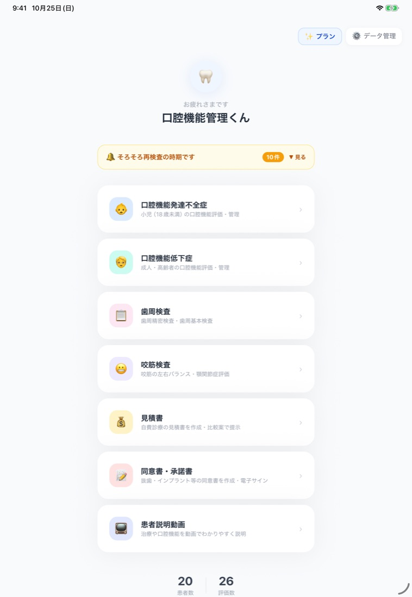
このあと始める評価は、ここで選んだ検査の種類になります。
別の種類の検査をするときは、ホームに戻って別のカードを選びます。
STEP 3患者さんを登録する
患者さんを1人登録します。
- 患者一覧の右上の + 新規 を押します。
- 患者名を入れます。必須は患者名だけです。
- 右上の 保存 を押します（普通に押すだけで保存されます）。
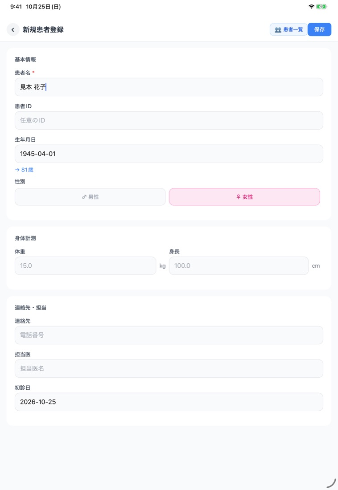
生年月日を入れると、年齢が自動で出ます。患者IDに医院のカルテ番号などを入れておくと、検索しやすくなります。
登録した患者さんは、あとで別の種類の検査にも使えます。
患者一覧の上で「すべての患者」が選ばれていれば、検査の種類に関係なく、登録したすべての患者が並びます。
「低下症の患者」などに切り替えると、その検査の評価がある患者と、その検査の種類を選んで登録した患者だけになります。見つからないときは「すべての患者」に戻してください。
STEP 4検査を入力して、長押しで保存する
検査の値を入れて、長押しで保存します。
- 患者一覧で患者さんの名前を押すと、患者詳細が開きます。
- いちばん上の青いボタン 低下症の新規評価を開始 を押します。
- 7項目（K1〜K7）のカードに、測った値を入れていきます。
- 右上の 保存（長押し） か、いちばん下の 評価を保存（長押し） を、約1秒押し続けます。
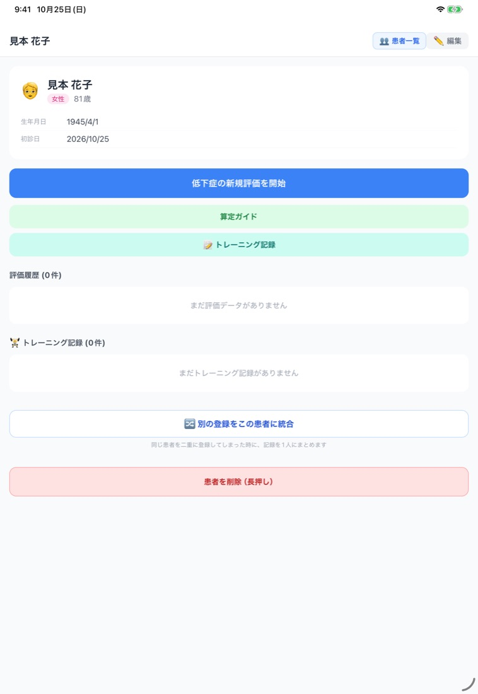
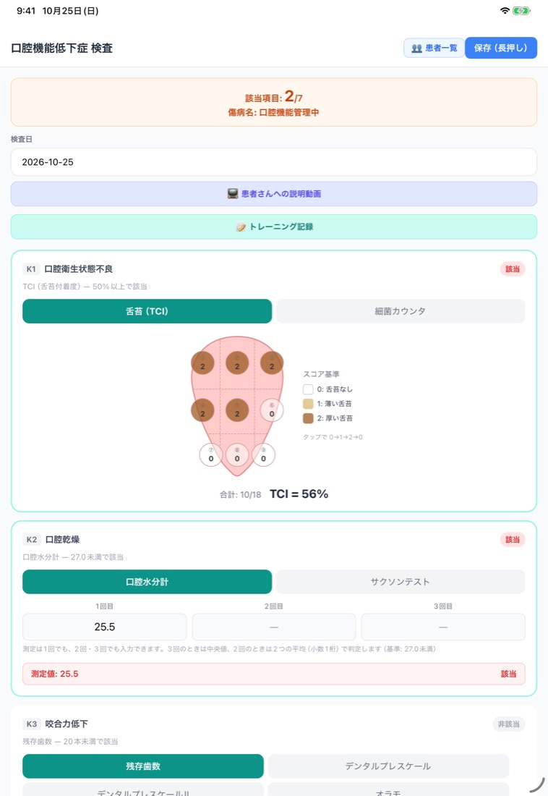
各項目の上のボタンで、検査方法を切り替えられます（舌苔の図と細菌カウンタ、口腔水分計とサクソンテスト、など）。
値を入れると、その項目が該当かどうかと、いくつ該当したかが画面の上に出ます。測っていない項目は空欄のままで保存できます。
空欄の項目は、画面とPDFでは「非該当」と表示されます。「非該当」は「入力した値では基準に当てはまらない」か「測っていない」のどちらかで、正常だと確かめたという意味ではありません。PDFでは測っていない項目の測定値が「-」になります。
該当・非該当の表示や書類は、入力した値を学会の基準値に照らして集計したものです。診断は歯科医師が行い、算定の要件は告示・通知で確かめてください（このアプリは医療機器ではありません）。
保存のボタンが長押しなのは、押し間違いを防ぐためです。普通に押しただけでは保存されません。
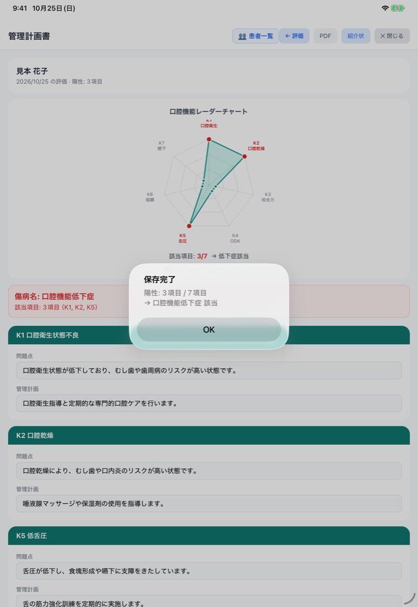
STEP 5管理計画書を確かめて保存する
評価を保存すると、管理計画書の画面が自動で開きます。
レーダーチャートと傷病名の下に、該当した項目ごとの「問題点」と「管理計画」が、ひな形の文で入っています。いちばん下には「総合管理計画」があります。
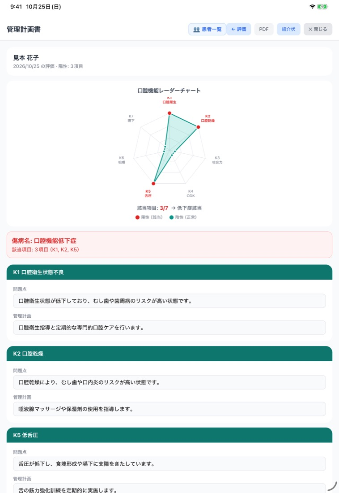
- 内容を確かめて、必要なら患者さんに合わせて書き換えます。
- 画面の下の 保存 を押します（普通に押すだけです）。
あとから直したいときは、患者詳細の評価履歴から、その評価の管理計画書を開けます。
STEP 6PDFを作って印刷する
PDFを作って、印刷または保存します。
- 管理計画書の画面の右上の PDF を押すと、印刷プレビューが開きます（このとき計画も保存されます）。
- 画面のいちばん下の PDFを保存 / 印刷 / 共有（長押し） を、約2秒押し続けます。
- PDFができて、共有のメニューが開きます。
- iPhone・iPad では プリント でAirPrint対応のプリンターから印刷、"ファイル"に保存 で端末やクラウドに保存できます。
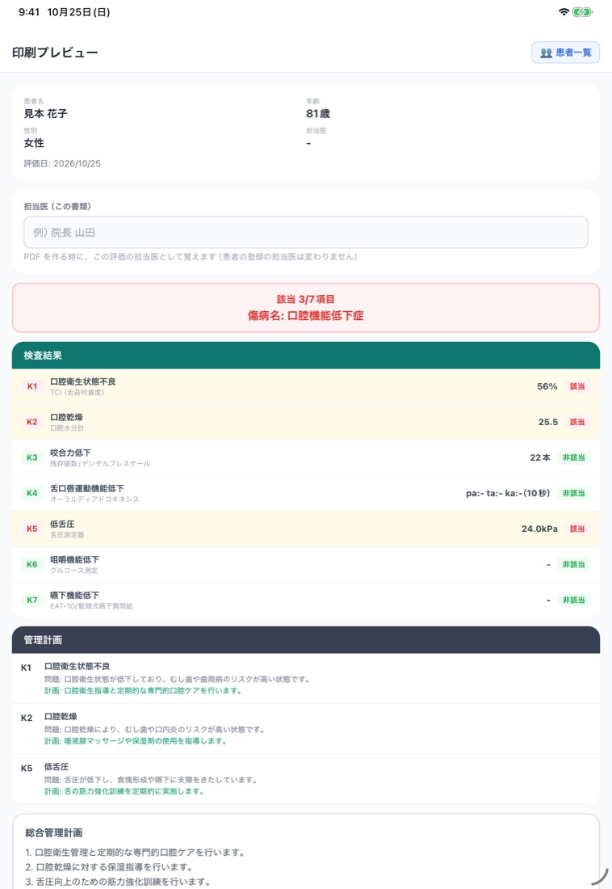
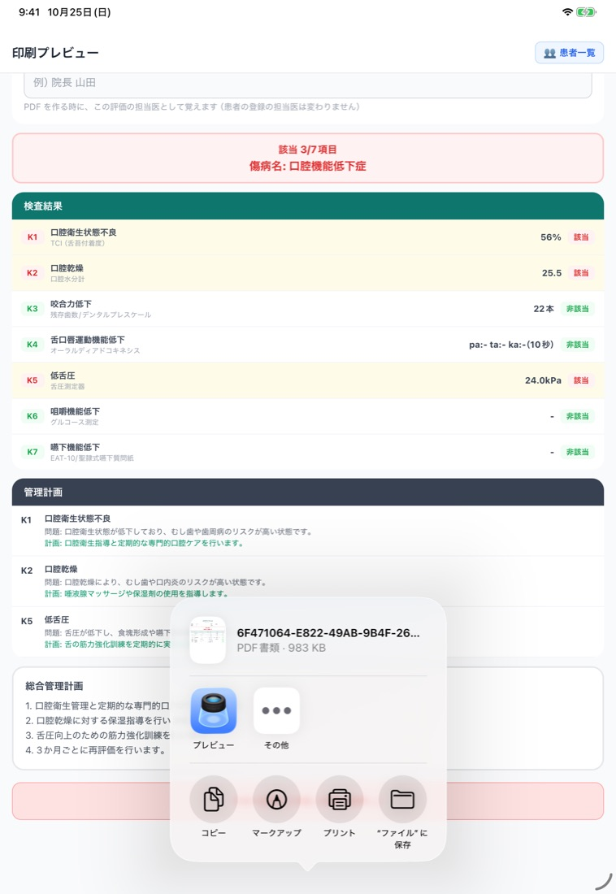
印刷プレビューは、患者詳細の評価の行にある 印刷 からも開けます。
Android では、端末の共有メニューが開きます。PDFを開けるアプリや、印刷に対応したアプリを選んで、保存・印刷します。
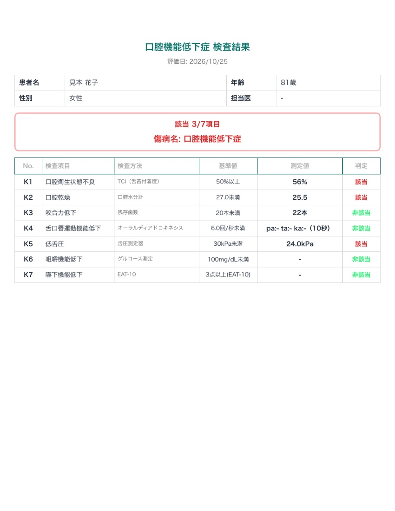
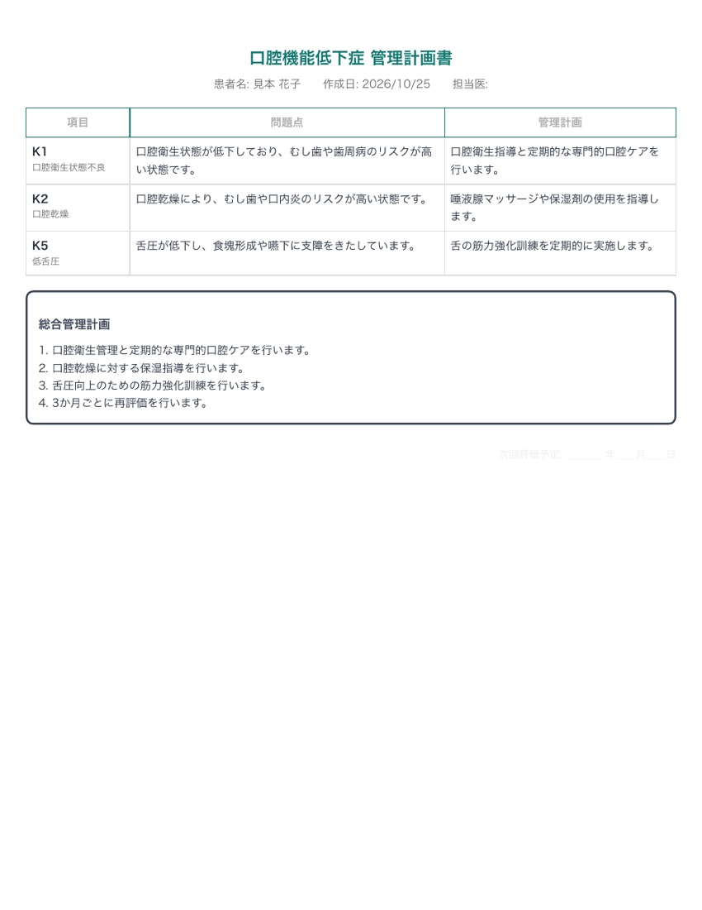
口腔機能低下症のPDFは、標準では1ページ目が検査結果、2ページ目が管理計画書の2ページです（自由記載が長いとページが増えます）。
上の例では、測っていない K4・K6・K7 は測定値が「-」で「非該当」と出ています。
患者IDや、検査した人の名前、日付・署名欄を入れるかどうかは、ホームの ⚙️ データ管理 の「管理計画書の設定」で選べます。
これで1人目は完了です。2人目からは、STEP 2〜6 のくり返しです。
ほかの検査の種類で使うとき
流れは同じですが、検査の種類によって、保存したあとに進む画面と、作れる書類が違います。
| 検査の種類 | 入力の画面 | 保存したあと | 作れる書類 |
|---|---|---|---|
| 口腔機能低下症 | 7項目（K1〜K7）。項目ごとに検査方法を切り替え | 管理計画書の画面に進む | 検査結果＋管理計画書（PDF。標準で2ページ） |
| 口腔機能発達不全症 | 最初に「離乳完了前（別紙1）」か「離乳完了後（別紙2）」を選んで、チェックリストに入力 | 管理計画書の画面に進む | チェックシート＋管理計画書（PDF。標準で2ページ） |
| 歯周検査 | P精密（6点法・4点法）か P基本（1点法）を選び、ポケット→出血・排膿→PCR→動揺度の順に入力 | 患者詳細に戻る | 歯周検査表（患者詳細の「印刷」から） |
| 咬筋検査 | 筋電位・左右バランス・自覚症状・触診圧痛など | 印刷プレビューに進む | 咬筋検査の結果報告書 |
表は横にスクロールできます。管理計画書があるのは、口腔機能低下症と口腔機能発達不全症です。発達不全症の評価画面には、保護者に記入してもらうための「患者モード」もあります。発達不全症モードの操作は「口腔機能発達不全症モードの使い方」で、画面つきで説明しています。チェックリストの見方は「口腔機能発達不全症のチェックリスト（離乳完了前・離乳完了後）とC項目の見方」で解説しています。
検査方法と、使う道具（口腔機能低下症）
口腔機能低下症の7項目で、アプリで選べる検査方法と、それぞれに使う主な道具です。医院にある道具に合わせて、項目ごとに検査方法を選べます。
| 項目 | アプリで選べる検査方法 | 使う主な道具 |
|---|---|---|
| K1 口腔衛生状態不良 | 舌苔の付着程度（TCI）／細菌カウンタ | TCI は舌を見て図に記録（専用の機器は使わない）。細菌カウンタは測定機器 |
| K2 口腔乾燥 | 口腔水分計／サクソンテスト | 口腔水分計は測定機器。サクソンテストはガーゼとはかり |
| K3 咬合力低下 | 残存歯数／デンタルプレスケール／デンタルプレスケールII／オラモ | 残存歯数は口の中で数える。デンタルプレスケール・デンタルプレスケールIIは感圧フィルムと読み取り用の機器（IIは対応スキャナーと解析ソフト）。オラモは咬合力の測定機器 |
| K4 舌口唇運動機能低下 | オーラルディアドコキネシス（5秒・10秒） | 決まった時間の発音回数を数えて入力（アプリにタイマーあり）。計測器を使う場合はその回数を入力 |
| K5 低舌圧 | 舌圧 | 舌圧測定器 |
| K6 咀嚼機能低下 | グルコース測定／咀嚼能率スコア法 | グルコース測定は指定の検査用グミと測定機器。スコア法は指定の検査用グミと評価用の見本 |
| K7 嚥下機能低下 | EAT-10／聖隷式嚥下質問紙 | 質問紙（患者さんに入力してもらう画面あり） |
表は横にスクロールできます。デンタルプレスケールIIは、解析のときの圧力フィルタ（自動クリーニング）のあり・なしで基準値が違うため（ありは350N未満、なしは500N未満）、アプリでも解析と同じ方を選んでください。ここに書いたのは、アプリで入力できる検査方法と道具の一覧です。口腔機能低下症の診断基準や、検査・管理の算定の要件は、「口腔機能低下症とは──7項目の検査・診断基準・使う機器」と「口腔機能低下症の算定（令和8年度）」で、学会の資料と厚生労働省の告示・通知をもとに解説しています。
つまずいたとき（よくある質問）
「評価を保存」を押しても保存されません。
検査の保存ボタンは、押し間違いを防ぐために長押しです。ボタンを約1秒押し続けてください。
印刷画面の「PDFを保存 / 印刷 / 共有」は約2秒の長押しです。患者登録の「保存」と管理計画書の「保存」は、普通に押すだけで保存されます。
印刷画面に「PDFを保存 / 印刷 / 共有」のボタンが出ません。
口腔機能低下症と口腔機能発達不全症では、管理計画書を保存するまで印刷のボタンは出ません。
患者詳細の評価履歴から評価を開き、管理計画書の画面で「保存」を押してから、もう一度印刷画面を開いてください。
該当した項目が1つもなく、総合管理計画も空のまま保存した場合もボタンは出ません。総合管理計画に方針を書いて保存してください。
患者登録の画面で、検査の種類を選べません。
検査の種類は、患者登録の前にホームのカードで選びます。患者さんは検査の種類に関係なく1回登録すれば、どの種類の検査にも使えます。
別の種類の評価を始めるときは、ホームに戻ってカードを選び直し、患者一覧からその患者さんを開いてください。
無料でどこまで使えますか？
患者の登録は無制限です。検査の評価は、検査の種類ごとに、評価を保存した患者4人まで無料で使えます（発達不全症4人、低下症4人、歯周検査4人、咬筋検査4人）。
同じ患者の再評価や、保存済みの評価の修正は人数に数えません。5人目の患者の最初の評価を保存するときに、有料プランへの登録が必要になります。
有料プランは、対象となる場合に1か月の無料トライアルがあります（適用されるかは購入画面の表示で確かめられます。トライアルが終わると自動で課金が始まります）。料金はアプリ紹介ページをご覧ください。
PINを忘れました。
PINの入力画面の下にある「PINを忘れた場合」を押し、同じアカウントでサインインし直すと、新しいPINを設定できます。患者データは消えません。
PINは医院のアカウント共通なので、新しいPINはほかの端末にも反映されます。PINを覚えているときは、データ管理の「PINを変更」から変えられます。
別のiPadやiPhoneでも使えますか？
使えます。最初の端末と同じアカウント（Apple または Google）でサインインし、同じPINを入力すると、同じ患者データを使えます。
違うアカウントでサインインすると、別の医院として空の状態から始まるので注意してください。
端末どうしの反映には通信が必要です。PINを変えたあとは、ほかの端末を通信できる状態で開いてください。
同じ患者さんを2回登録してしまいました。
患者詳細の下にある「別の登録をこの患者に統合」で、2つの登録の記録を1人にまとめられます。
次にやると便利なこと
- 算定ガイド：患者詳細の緑のボタン。検査と管理の点数の目安を確認できます
- トレーニング記録：患者詳細から。指導したトレーニングを記録し、提供文書（口腔機能実地指導）も作れます
- 患者説明動画：ホームから。トレーニングなどの説明動画を患者さんに見せたり、QRコードを印刷して渡したりできます（無料）
- バックアップ：ホームの「⚙️ データ管理」から。クラウドへのバックアップと、端末へのファイル書き出しができます
わからないことは、サポートページのよくある質問をご覧いただくか、アプリのホームの「ご意見・ご要望」からお送りください。
口腔機能管理くん──口腔機能低下症・口腔機能発達不全症・歯周検査・咬筋検査の記録と、管理計画書の作成を支援するアプリです（医療機器ではありません。診断は歯科医師が行います）。
iPhone・iPad・Android。患者の登録は無制限、検査の評価は種類ごとに4人まで無料。
App Store Google Play アプリ紹介ページこのページは、アプリのバージョン 1.9.6（2026年10月時点）の画面と動作をもとに書いています。画面の文言や配置は、今後のアップデートで変わることがあります。数値と患者名は説明用の架空のものです。